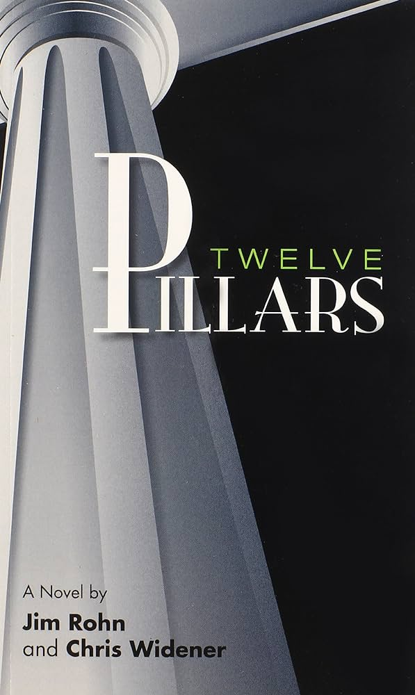

Degree Programme (Current): Bachelor of Science in Computer Networking and Security
Top Three skillsets I have developed:
Database Querying and Administration
Linux OS and Tools (Ubuntu, Metasploitable, Kali Linux)
Computer Networking
A Book I read about sucess: "Twelve Pillars"

Chapter Reviews:
Chapter 4:
Summary and Reflection:
This chapter was used to discuss the pillar of success that pertains to goal setting and
that the point of goal setting is the person you ultimately become to achive the goals. It's the journey not the destination,
but know what the destination is also important. Review goals daily will ensure motivation and focus on what actions need to taken on a daily basis.
Application:
Applying this pillar to my life will be understanding the scope of tasks that need to be completed inorder to achieve a goal.
Knowing what needs to be done allows me to focus my time and energy more effectively.
Chapter 5:
Summary and Reflection:
This chapter was used to discuss the pillar of sucess that pertains to proper use of time.
Time being "the most valuable asset" we have to become successful, it must be used wisely and productively.
If tasks are prioritize based on importance and urgency with suffinent deadlines, while avoiding distractions and procrastinating
one can capitilize on the best opportunities for each day.
Application:
Applying this pillar to my life will allow me to sequence tasks based on the inert value
that can be gained from them. This will ensure my time is always being used on the best possible thing needed for sucess.
Chapter 6:
Summary and Reflection:
This chapter was used to discuss the pillar of sucess that pertains to power of association.
"Show me your friends, and I will tell you who you are." If you want to improve on your thoughts, beliefs and actions,
make friends with people who embodies them; because they will influence you constantly. Avoid negative people and seek out positive people.
Application:
Applying this pillar to my life means being intentional and introspective about the people in my inner circle
and how they're currently serving my personal development. And making changes as it pertains to teh time spent with persons based
on the whether they're postive or negative minded individuals.
Chapter 7:
Summary and Reflection:
This chapter was used to discuss the pillar of sucess that pertains to being a life long learner.
Traditional and Formal educaton is not the only piece to the puzzle need to cultivate wealth and success.
Learning through books, podcasts, seminars, mentors and experts is another facet to developing as a person.
Once there's a hunger for knowledge and the willingness to apply it, success will follow.
Application:
Applying this pillar to my life would mean being open minded to the many different ways of learning.
Seeking our these mediums, and being fervent in understanding and applying the concepts that will beneficial.